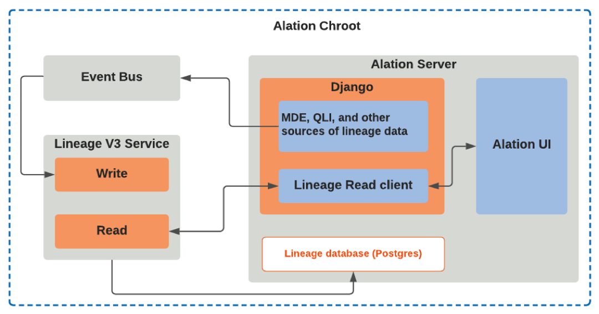
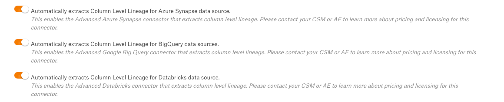

Lineage¶
Alation Cloud Service Applies to Alation Cloud Service instances of Alation
Customer Managed Applies to customer-managed instances of Alation
Lineage is data about the origin of data and its movement through an organization’s data ecosystem. Lineage data documents how target data objects are created from source data objects. Lineage is visually represented as a diagram on the Lineage tab of a data source, BI source, or file system. Lineage diagrams frequently include Dataflow objects, which can be used to document:
ETL and ELT processes
stored procedures
SQL queries
scripts that produce target data from source data
The lineage diagram brings together a target data object, its upstream sources, and the dataflow objects that track its movement, to fully represent the data ecosystem.
From version 2023.3, lineage can be displayed in either of two views: a classic view and a compound layout view. The compound layout view, currently in Beta release, groups lineage components by their top-level data source. For more information, see Reading the Lineage Diagram.
Types of Lineage¶
There are two main types of lineage: table-level and column-level. Table-level lineage is the more common, as all types of lineage extraction are capable of producing it. Column-level lineage is dependent upon both the data source and the data source connectors—currently, only some OCF connectors support column-level lineage.
Alation automatically calculates lineage using metadata sourced from metadata extraction (MDE), query log ingestion (QLI), Compose queries, and the data posted over the Alation public APIs. One part of MDE lineage extraction is direct lineage, which is lineage data extracted from system tables in certain databases such as SAP HANA and Databricks Unity Catalog.
Table-level lineage is calculated for most sources, and column-level lineage is calculated for those sources whose connectors support it. Both table-level and column-level lineage can also be created manually or by using the Lineage API. For a complete list of OCF connectors that support column-level lineage, see the Support Matrix.
Lineage Architecture¶
The lineage service, introduced in Version 2021.4, is a microservice operating inside the Alation server. It is responsible for the creation, storage, and retrieval of lineage data into the catalog.
The Alation server creates lineage data from multiple sources, such as metadata extraction (MDE), query log ingestion (QLI), Compose query history, and public APIs. With Lineage V3 enabled, lineage events generated from these sources are sent to the Lineage V3 service via Event Bus. In the lineage service:

the lineage write service consumes lineage events from the Event Bus and stores this lineage data into the lineage database;
the lineage read service retrieves the stored lineage data and powers the lineage diagrams in the Alation user interface.
Enabling Column-Level Lineage¶
For most connectors that support column-level lineage, column-level lineage is not calculated by default. You must first enable automatic extraction by setting a feature flag similar to the following on the **Feature Configuration** tab of Alation’s **Admin Settings** page:

If you still do not see column-level lineage, check with your Alation account manager to ensure that column-level lineage for the specified connector is part of your Alation license entitlement.
Lineage API Documentation¶
Lineage API documentation can be found:
on the Developer Portal: Lineage APIs
From release 2020.3, as an OAS 3.0 specification at <AlationInstanceURL>/openapi/lineage/.
For a quick start guide to lineage APIs, see Lineage - General API Quick Start Guide.
For a quick start guide to dataflow object APIs, see Lineage - Dataflow Quick Start.
For frequently asked questions about lineage and dataflow objects, see Lineage & Dataflow - Frequently Asked Questions.